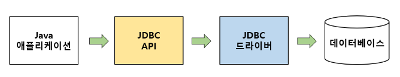

JDBC란(Java Database Connectivity)?
Java 기반 애플리케이션의 데이터를 데이터베이스에 저장 및 업데이트하거나, 데이터베이스에 저장된 데이터를 Java에서 사용할 수 있도록 하는 자바 API이다.
JDBC는 Java 애플리케이션에서 데이터베이스에 접근하기 위해 JDBC API를 사용하여 데이터베이스에 연동할 수 있으며,
데이터베이스에서 자료를 쿼리(Query)하거나 업데이트하는 방법을 제공한다.
JDBC의 표준?
JDBC는 3가지 기능을 표준 인터페이스로 정의하여 제공한다.
- Spring Data JDBC, Spring Data JPA 등과 같은 기술이 등장하면서 JDBC API를 직접적으로 사용하는 일은 줄어들었다.
하지만, Spring Data JDBC, Sprind Data JPA와 같은 기술도 데이터베이스와 연동하기 위해
내부적으로 JDBC를 이용하기 때문에 JDBC의 동작 흐름에 대해 알 필요가 있다.
JDBC의 동작 흐름?

반대로 Java의 단점은
- 자바는 실행을 위해 자바 가상 머신을 거쳐야 하므로,
다른 언어에 비해 실행 속도가 느려서 처리 속도가 중요한 애플리케이션에는 적합하지 않다.
- 자바는 예외 처리가 잘 되어 있지만, 개발자가 일일이 지정해 줘야 한다는 불편함도 있다.
그렇게 하지 않으면, 컴파일이 거부된다.
- 하드웨어에 연결할 수 없기 때문에 직접 하드웨어를 정밀하게 조정해야 하는 프로그램 개발에는 적합하지 않다.